device registration on TTN
Each device needs to be registered on the ‘The Things Network’ platform (TTN) for becoming fully operational.
First, create a free account on The Things Network: https://www.thethingsnetwork.org/get-started
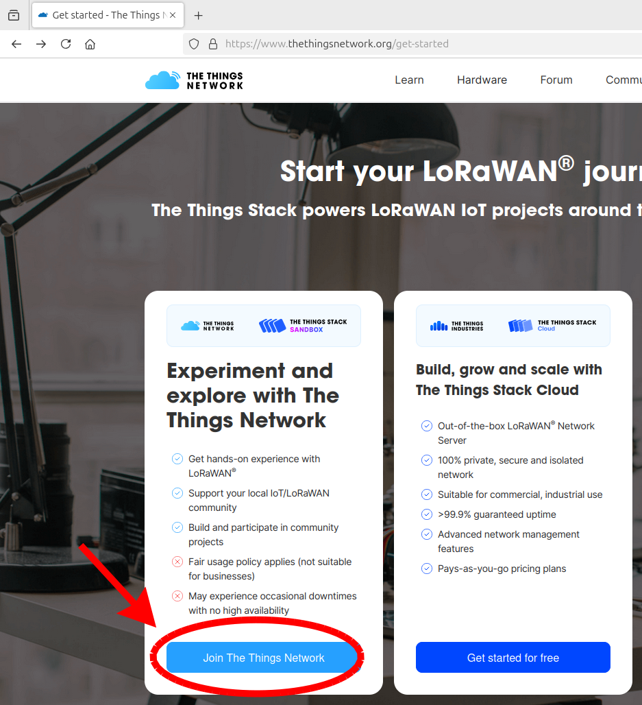
Once you’ve signed up and created your account, you’ll need to create an ‘application’. This can be thought of as a group of end devices managed similarly in terms of their structure and data transmission.
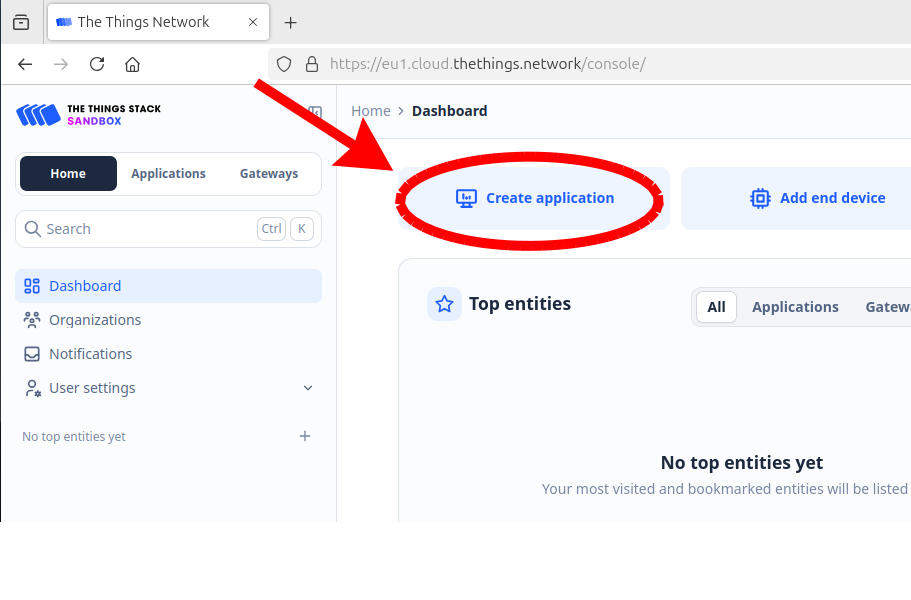
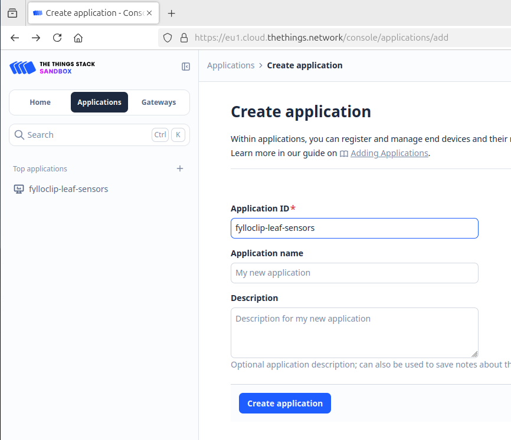
After creating the application, you’ll need to specify some settings for subsequent data handling. One crucial step is to insert a payload formatter, i.e. a code which will transform the incoming data into a format suitable for your intended data flow.
The data flow and management proposed in this tutorial is only one of many possible options. Here, we will decode the incoming data packet and transform it to a JSON object containing 5 variables named Z, A, B, C, D and E. Z will hold the ID number of the device, A the light measurement of sensor 1, B the light measurement of sensor 2, C the capacitance value of sensor 1, D the capacitance value of sensor 2 and E the battery voltage.
To enter the payload formatter for the application, select Payload formatters –> Uplink and then choose Custom Javascript formatter as the formatter type. In the field Formatter code paste the follwing code:
function Decoder(bytes, port) {
return {
//Sensor ID
Z: (bytes[0]),
//light 1
A: ((bytes[2] << 8) | bytes[1]),
//light 2
B: ((bytes[4] << 8) | bytes[3]),
//capacitance 1
C: (bytes[5]),
//capacitance 2
D: (bytes[6]),
//Battery voltage
//round to 2 decimal places
E:+((((bytes[8] << 8) | bytes[7]))*3.3/1023).toFixed(2)
}
}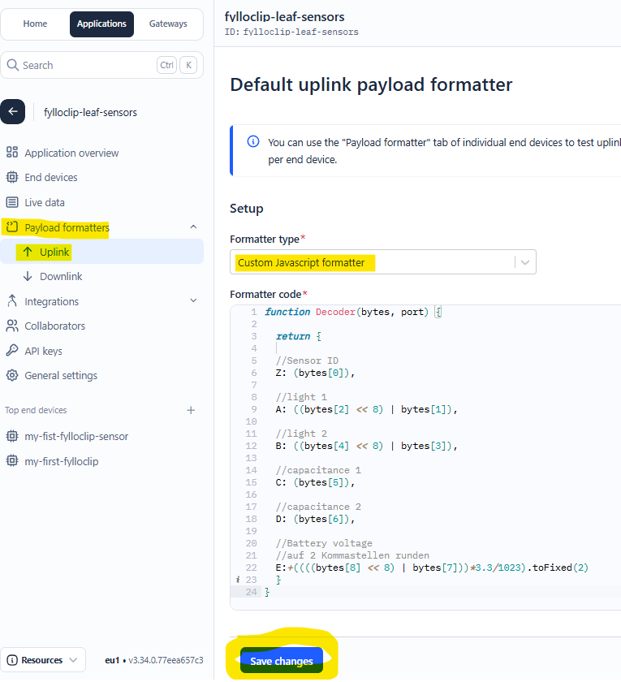
Having inserted the payload formatter at the application level, it will be automatically applied to all end devices which will be created within this application. Alternatively, it is also possible to specifiy a payload formatter individually for a single end device.
Another important setting at the application level is to specifiy, what the TTN network server should do with the decoded data packets. Data cannot be permanently stored on TTN, therefore they need to be forwarded to some other storage place on the cloud. Again, there are many possible options for this to be achieved, The settings necessary for the solution proposed here are explained more in detail in the paragraph storing the data in the cloud.
Next, you can start with the registration of end devices (each FylloClip module would be a single new end device)
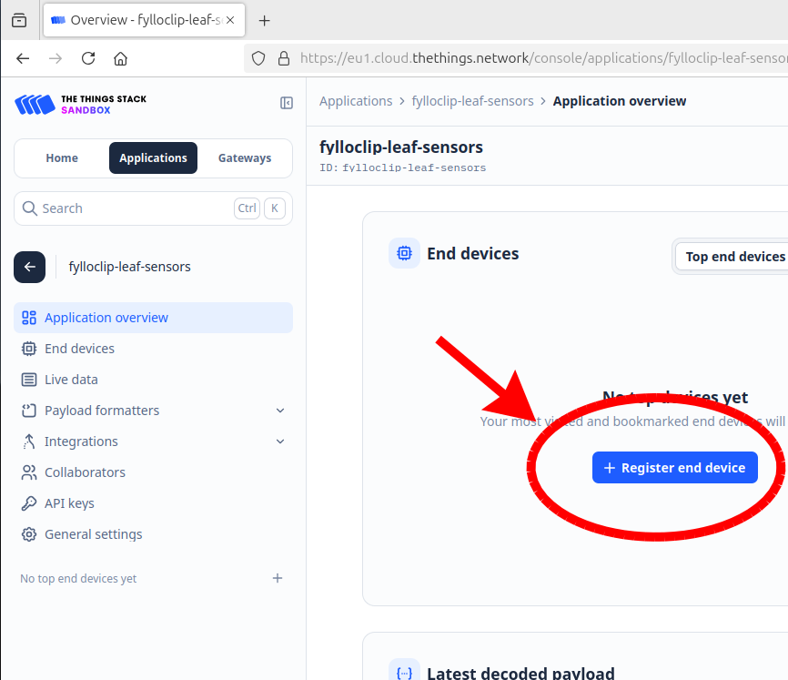
Follow the settings in the subsequent screenshots (if you’re located outside of Europe select the frequency plan applicable to your region).
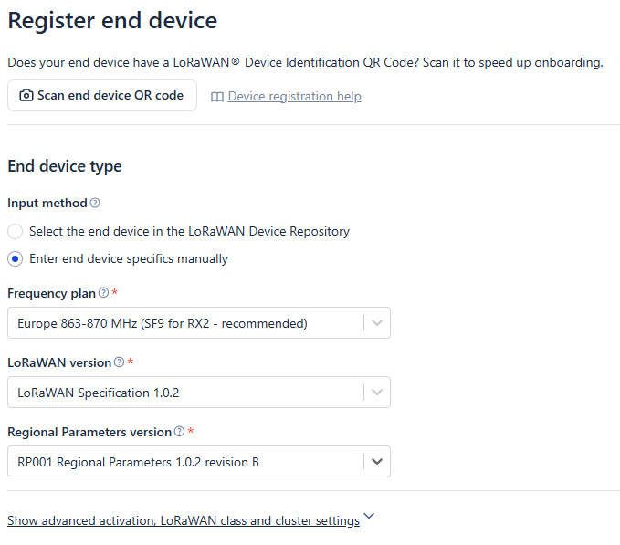
next, select ABP and generate the DevEUI and the various keys:
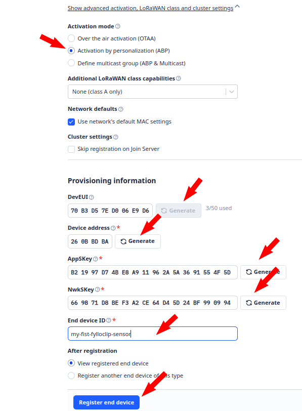
After registration we have to edit the newly created device to add a few further details and to copy the keys we need to insert into the Arduino sketch
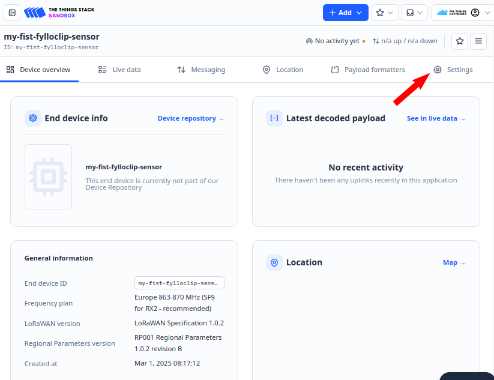
Scroll down and expand the Network layer settings
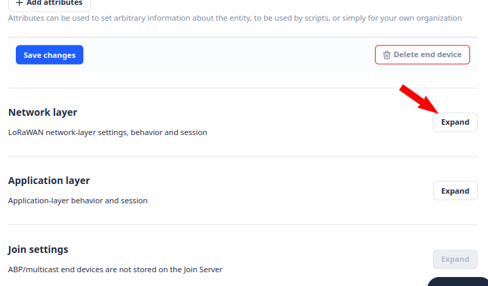
Scroll down and open the advanced MAC settings
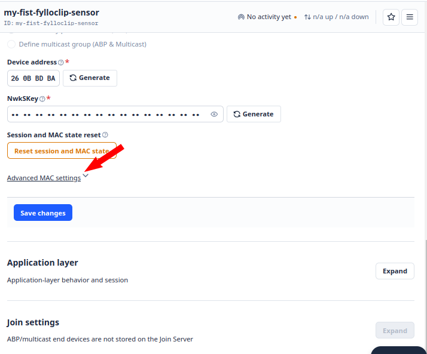
Click 9 times on the ‘add frequency’ button to add 9 empty fields
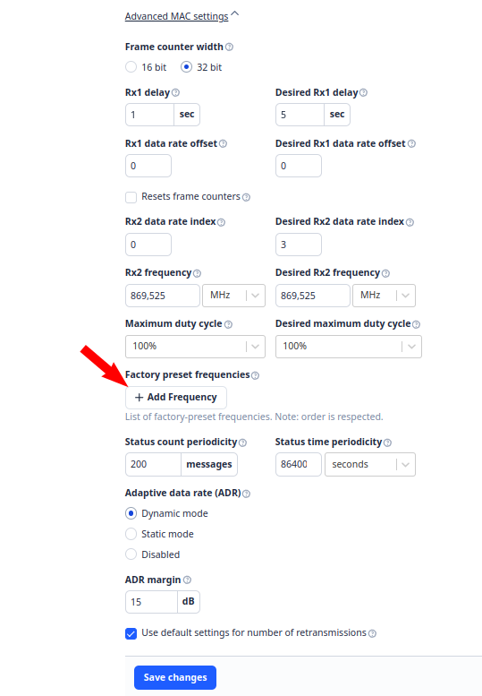
In those fields insert the following frequencies, this example reports the frequencies used for Europe (868 MHz frequency band), which are 868100000, 868300000, 868500000, 867100000, 867300000, 867500000, 867700000, 867900000. Add the end save the changes.
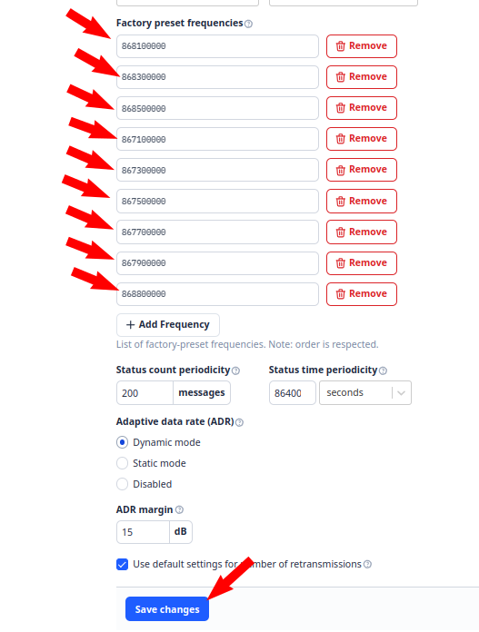
Now we retrieve the keys to be inserted into the Arduino sketch. Return to ‘Device overview’
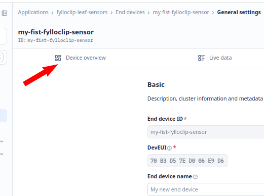
Make NwkSKey and AppSKey visible
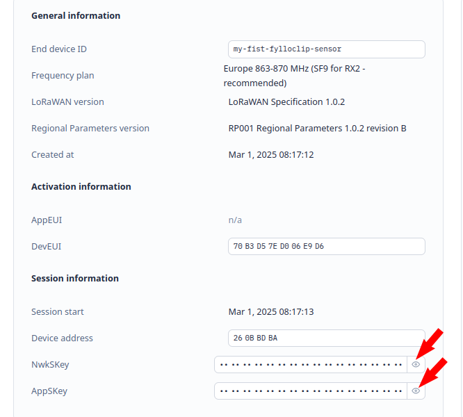
Move the cursor to the right side of the key fields to activate the formatting options, the change the format as follows. At the end copy each key using the copy function and insert them in the respective positions of the Arduino sketch.
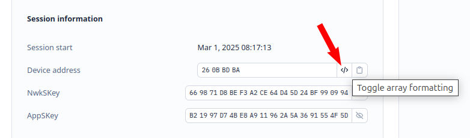
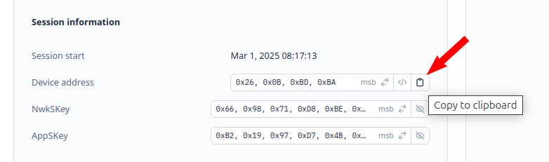
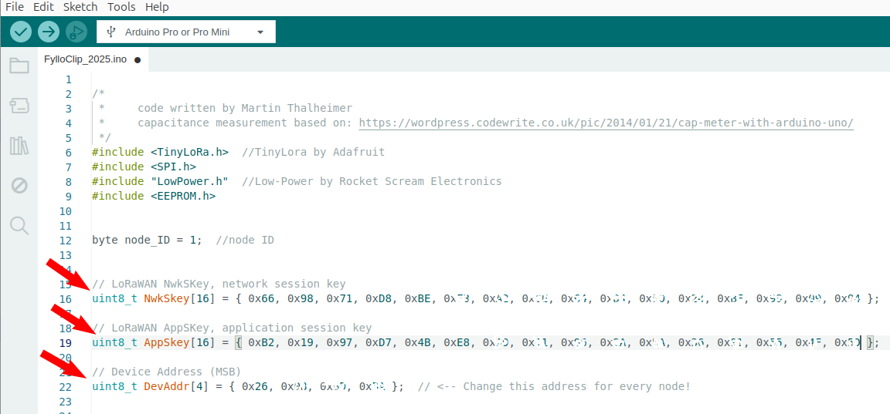
You can also specify a unique ID number for your device (line 12 of the code), which may be helpful for later data handling. At this point the sketch id ready for the upload onto your device.